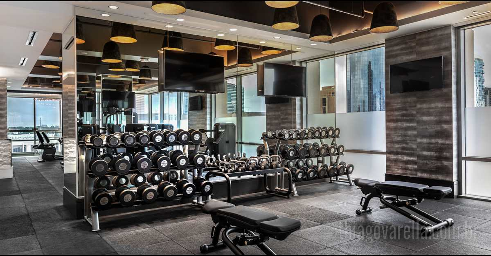
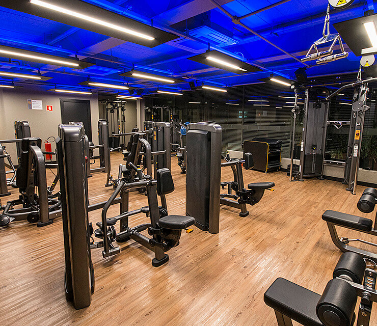

Aqui você pode encontrar os melhores personal trainers da Academia Estácio. Nossa equipe é composta por profissionais qualificados, que oferecem treinos personalizados e acompanhamento para alcançar os seus objetivos de forma eficiente e segura.
Se você está em busca de um local onde possa melhorar sua saúde, seu bem-estar e atingir seus objetivos de fitness de maneira eficiente, a Academia Estácio é a escolha perfeita. Abaixo, destacamos alguns dos principais motivos para você se matricular nesta academia e começar sua jornada para uma vida mais saudável e ativa.
A Academia Estácio conta com uma equipe de personal trainers altamente qualificados, com vasta experiência e formação em diversas áreas do fitness e da saúde. Esses profissionais não apenas têm conhecimento técnico, mas também estão sempre atualizados com as últimas tendências de treino e saúde, garantindo que você receba o melhor acompanhamento possível. Se você tem um objetivo específico, como emagrecimento, ganho de massa muscular ou melhorar o condicionamento físico, nossos personal trainers estão prontos para criar planos de treino totalmente personalizados e adaptados às suas necessidades.
A estrutura da Academia Estácio é moderna, espaçosa e equipada com o que há de melhor em aparelhos de musculação, cardio, além de áreas específicas para atividades de grupo como yoga, pilates e dança. Tudo isso em um ambiente limpo e organizado, que proporciona conforto e motivação para que você se concentre totalmente em seu treino. Além disso, a academia está sempre em constante manutenção e inovação, para garantir que você tenha acesso às melhores condições de treino.

